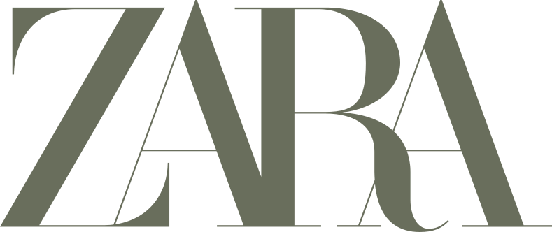
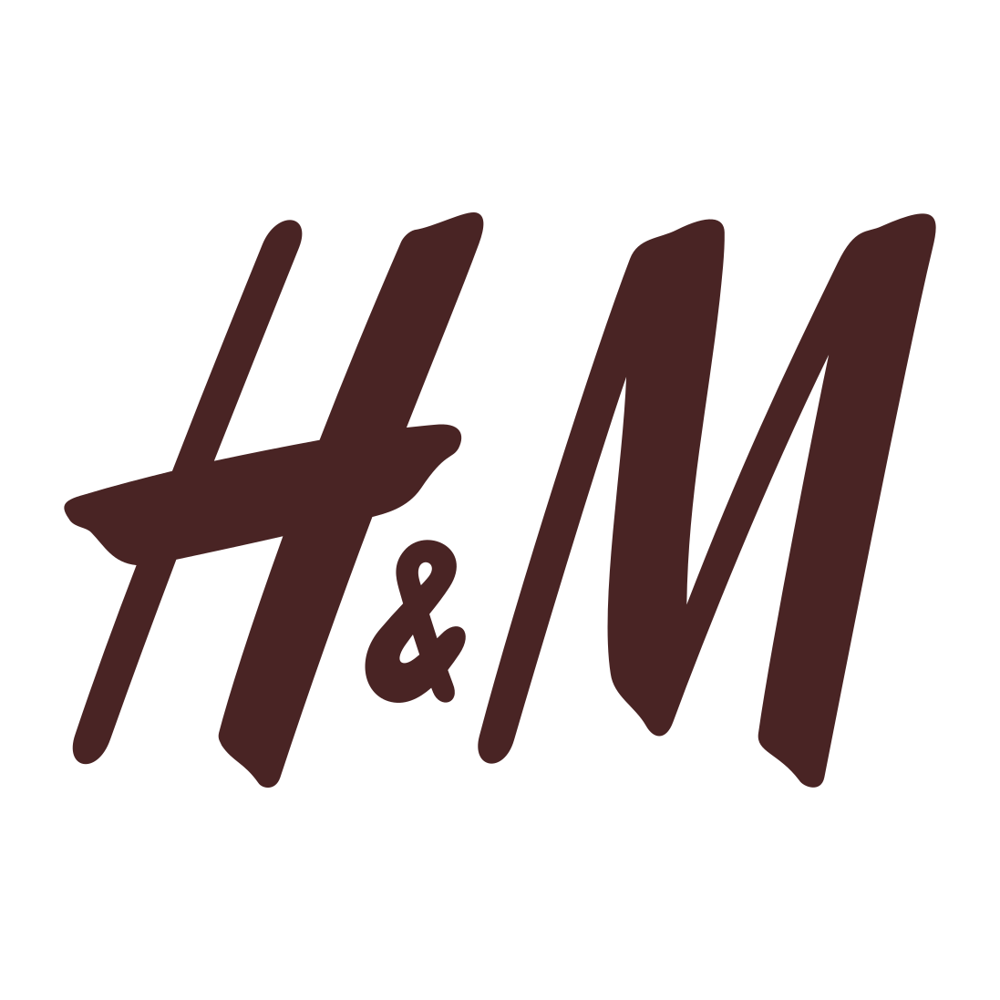

Before the 1800s, fashion was an extensive and almost primitive process where one had to source materials like wool or leather, prepare and weave them into garments. However, the Industrial Revolution amplified the world of fashion by introducing new technology – like the sewing machine, textile machines, ready-made clothing factories and mass production of clothes. All of this resulted in clothes becoming cheaper, easier and quicker to make. Meanwhile, localized dressmaking businesses started to emerge to cater to the middle classes, and they employed workroom employees along with garment workers, who worked from home for meager wages.
These types of operations would, later on, lead to the growth of the ‘sweatshops’ that would provide the basis of modern clothing production. During World War II, the trend of more functional styles and fabric restrictions led to the standardized production of clothes. Once the middle-class consumers got accustomed to it, they became more receptive to the idea of mass-produced clothing.
The fashion industry produced and ran clothes for four seasons a year up until the mid-twentieth century, and the designers would work many months in advance to predict what the customers would want. It was in the 1960s and 1970s that this method changed drastically when the young generation started to create new trends and used cheaply-made clothing as a form of personal expression. Although most fashion brands tried to find ways of keeping up with the increasing demand for affordable clothes, there was still a clear distinction between the high-end and High Street fashion. In the late 1990s and early 2000s, fast fashion became a booming industry in America with people enthusiastically partaking in consumerism. Fast fashion retailers such as Zara, H&M, Topshop and Primark took over high street fashion. Initially starting as small stores located in Europe, they were able to infiltrate and gain prominence in the American market by examining and replicating the looks and design elements from runway shows and top fashion houses and quickly reproducing and selling them at a fraction of a cost.
When it comes to the question of who was the pioneer of the "fast fashion" phenomenon, it is difficult to pinpoint one particular brand or company. Nevertheless, there is some evidence that suggests the popular fashion brands that helped start the phenomenon.
Amancio Ortega, founder of Zara, founded his clothing company in 1963 in Galicia and it featured products that were affordable replications of popular higher-end clothing fashions in addition to producing its own unique designs. Later on in 1975 Ortega opened the first retail outlet in Europe in order to sell his collections in the short run and also to integrate production and distribution in the long run. He eventually was able to move to New York in the early 1990s where the New York Times first coined the term “fast fashion” to describe the mission of his store which said that “it would only take 15 days for a garment to go from a designer's brain to being sold on the racks”.
In the article “Fast Fashion Lessons” Donald Sull and Stefano Turconi studies how Zara pioneered an approach to navigate the volatile world of the fast fashion industry. According to Sull and Turconi one of the reasons for Zara's success was that it built a supply chain and production network where they maintained complicated and capital-intensive operations (like computer-guided fabric cutting) in-house, while it outsourced labour-intensive operations (like garment sewing) to a network of local subcontractors and seamstress operatives based in Galicia, Spain. Thus with shorter lead times the company was able to respond very quickly when the sale of their products exceeded their expectations and also cut off production for items that didn't have very high demands. Unlike many fashion companies, Zara hardly invests in television or press promotional campaigns and instead relies on store windows to convey the brand image, spread of word-of-mouth and locating their shops strategically in areas with high consumer traffic
Similar to Zara, the origin story of H&M also has common traits and technically it has also been the longest running retailer. In 1946 Erling Persson, a Swedish entrepreneur, goes on a trip to the USA where he was greatly intrigued and impressed by the concept of efficient and high-volume production stores that he witnessed in New York. The following year in 1947 Persson establishes a women's wear store called Hennes (which is Swedish for “Hers”) & Mauritz (also commonly known as H&M) in Västerås, Sweden and then between the years of 1960 and 1979 the company rapidly expands not only in terms of location, with 42 stores across Europe, but also in terms of its clothing to include the whole family.
The initial foundation for its global expansion is laid when in the 1980s H&M decides to acquire Rowells, a Swedish mail order company, and use it to shift the sale of their fashion products directly into the customer's homes. After that in the 1990s H&M decides to invest and capitalize on the transition to large city billboard advertising for their products by using famous celebrities and supermodels wearing their clothes. Finally H&M opens its first flagship store on Fifth Avenue in New York in 2000, which marked the commencement of its international expansion outside of Europe.
Zaw Thiha Tun examines the secret of H&M's success as a company and mentions that the distinct business model of H&M is unlike Zara since they don't manufacture any of their products in-house. Rather it outsources its production to more than 900 independent suppliers that are mainly located in Europe and Asia and overseen by 30 strategically located oversight offices. At the same time it primarily depends on its state-of-the-art IT infrastructure and network to connect between the central national office and the production offices. This fact proves to be very crucial to their operations since they don't own factories or secure the fabrics in advance, and thus they have been able to reduce their lead times through continuous developments in the buying process.
